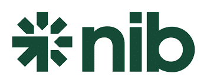

Stretch Lab Gladesville and Darlinghurst are registered AUSactive members, and the information on this page is provided to us by them is general information intended for health professionals as well as individual fund members.
The list below are the Private Health Funds that recognise the StretchLab Program. You will need to complete a Health Management Form or an Approval form. Each Fund will have its own requirement.
A doctor or allied health professional referral will be required to indicate that the StretchLab program is necessary for to an existing health benefit and/or medical condition.
Finally, it’s also important to remember that the amount of a refund is dependent on the level of cover held by the member.
| Medibank | |
|---|---|
Medibank Health Funds that are StretchLab eligble |
|
| Resources | |
| Read FAQ's | Approval Form |
| Medibank Health Fund Rebate Steps | |
| Step 1 | Download this approval form (Approval Form). |
| Step 2 | Visit a GP for an assessment for a Health Improvement condition such as Pain Relief, Arthritis, or muscular needs. |
| Step 3 | Request an Invoice from StretchLab Gladesville or Darlinghurst for your membership or Session Pack. |
| Step 4 | Submit Approval Form and Invoice to your Medibank. |
| AUSactive Business Membership/ Invoice Requirements | |
|
|
| Bupa | |
|---|---|
| Bupa Health Management benefits: Gym memberships and personal training. To help manage your client’s health, Bupa provides a benefit towards some of the costs of gym memberships delivered by AUSactive recognised providers. These benefits are available to Bupa members on the following health insurance products: | |
|
|
| *Eligibility criteria, yearly limits, waiting periods, fund and policy rules apply. | |
| Gym fees are only claimable when the exercise program is designed to address or improve a specific diagnosed health or medical condition – for example, arthritis. To claim, a health professional such as a GP, medical specialist, or exercise physiologist must complete the Health Management Gym form on your client’s behalf. Bupa will only pay benefits for AUSactive recognised Fitness Studios. | |
| Resources | |
| Read FAQ's | |
| Bupa Rebate Steps | |
| Step 1 | Download this approval form (Approval Form). |
| Step 2 | Take the form to your GP or Allied Health professional to complete the Health Improvement form for Pain Relief, Arthritis, or muscular needs. |
| Step 3 | Request an Invoice from StretchLab Gladesville or Darlinghurst for your StretchLab Membership or Session Pack. |
| Step 4 | Submit Approval Form and StretchLab Invoice to your MyBupa Portal. |
| AUSactive Business Membership/ Invoice Requirements | |
|
|
| nib | |
|---|---|
|  | |
| nib Healthier Lifestyle Benefits Program: AUSactive businesses are recognized by nib to provide StretchLab services. StretchLab Gladesville & Darlinghurst are recognized through AUSactive membership. StretchLab Memberships can be claimed for nib members on selected extras covers are available to manage existing health conditions identified by a health practitioner. | |
| nib Health Fund Rebate Steps | |
| Step 1 | Download this approval form (Approval Form). |
| Step 2 | Complete the details of the Health Management Form. |
| Step 3 | Request an Invoice from StretchLab Gladesville or Darlinghurst for your StretchLab Membership or Session Pack with our Provider Number. |
| Step 4 | Submit Health Management Form and StretchLab Invoice to your nib Portal. |
| Resources | |
| Read FAQ's | |
| AUSactive Business Membership/ Invoice Requirements | |
|
|
| Westfund | |
|---|---|
| Westfund Ultimate Extras health insurance is designed for people committed to maintaining a proactive and healthy lifestyle. It offers benefits for extras that help you manage your health, like gym memberships, vitamins, and preventative health checks. | |
| Westfund only offers rebates to registered AUSactive Businesses and Cert IV and above AUSactive registered exercise professionals. | |
| AUSactive Business Membership/Class Invoice Requirements | |
|
|
| Resources | |
| Learn More | Approval Form |